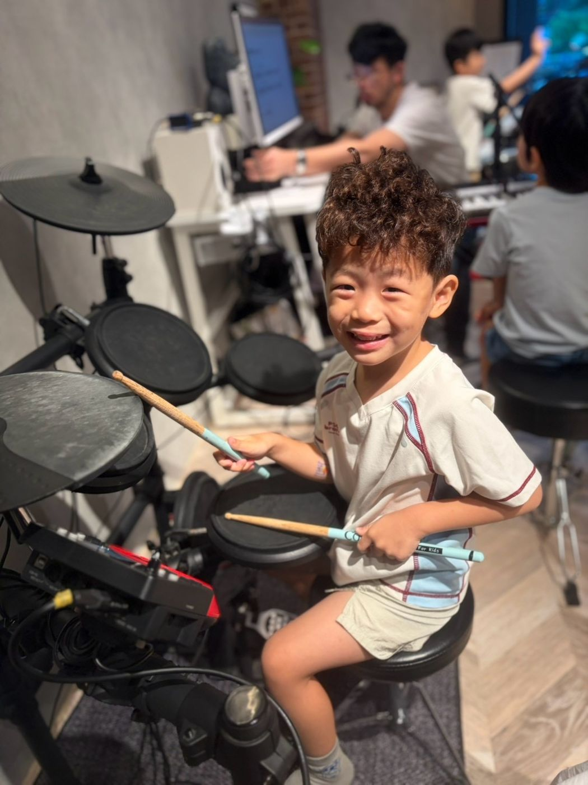
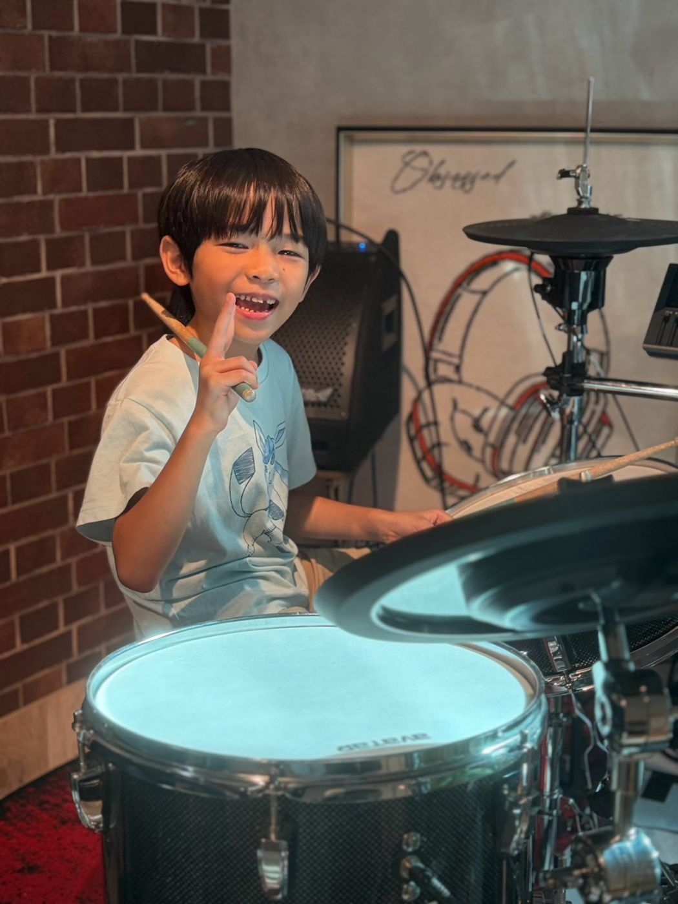

板橋 5～6 歲可以學爵士鼓嗎？大班到小一，爸媽最常問的幾件事
孩子快上大班，或剛升小一，忽然說想打鼓。爸媽腦海裡通常會接著冒出一連串問題：會不會太小？坐得住嗎？腳踩得到大鼓嗎？會不會太大聲、傷到耳朵？而且家裡也還沒有鼓。
這篇就把這些問題一次說清楚。教室位在板橋中正路、國光國小正對面，5 到 6 歲這個階段，我們帶過不少孩子進來上課，也陪著他們站上舞台。
5～6 歲，適不適合學爵士鼓？
慕尼克板橋校區的爵士鼓課，建議 3 歲以上開始。5 到 6 歲正好是大班到小一，多數孩子已經跟得上簡單指令，手也有力氣握住鼓棒。不過每個孩子的發展步調不同，年齡只是參考，更重要的是他現在的狀態。
在家可以先做一份大約 5 分鐘的準備度檢查，看看他能不能數到 10、分得清左右手、聽得懂簡單的組合指令。詳細做法寫在〈孩子幾歲可以學爵士鼓？在家 5 分鐘就能做的準備度檢查表〉。就算三項還不穩也沒關係，上課前先和老師說，課堂上會多留意。
這個年紀不必先會看譜，更不必先買一套鼓。

孩子坐不住，怎麼辦？
大班、小一的孩子，本來就不太可能整堂課都坐得端端正正。一堂課 50 分鐘，老師會依他當天的狀況調整步調，不會要求他像大人一樣一直坐著練。
板橋校區的爵士鼓由幾位老師共同授課。劭奇老師（陳劭奇）從學齡前到成人都教，課堂上走的是「先理解、再熟練」：孩子卡在某個動作時，先找出卡住的地方，再依他的個性調整引導方式。安安老師（張妤安）教兒童與成人爵士鼓，本身是職業鼓手，鼓齡 15 年，曾任猛虎巧克力、鯨魚號鼓手，也登過大港開唱、火球祭、簡單生活節等舞台。小江老師（江孟翰）、小佑老師（陳諺群）也都有帶兒童爵士鼓。
如果還不確定孩子坐不坐得住，可以先加入官方 LINE，跟老師說一下孩子的年紀和平常的狀況，再約第一堂體驗。
腳踩不到大鼓、手也還小？
教室備有兒童尺寸的鼓組，鼓椅和小鼓架都能依孩子的身高調整。第一堂體驗先打傳統鼓還是電子鼓，老師會看孩子的身高、適應狀況和音量接受度當場決定。電子鼓的支架可以降得比較低，孩子不用勉強去踩一套過高的鼓。
手小同樣不是問題。老師會先幫他調好座位和腳的距離，讓他用現在的身高就能自然上手。第一堂體驗會實際看孩子坐上去的狀況，不會先預設他一定踩得到、或一定踩不到。
打鼓會不會太大聲、傷到聽力？
這是爸媽最常問的問題之一。剛開始的孩子可以先用電子鼓，音量能控制在比較舒服的範圍；每一套鼓旁邊都有耳機，隨時可以戴上，教室也會提供耳罩，保護孩子的聽力。
團班教室配置三組傳統鼓、兩組電子鼓，一人一套；獨立鼓房則是隔音鼓房，裡面是 TAMA 傳統鼓。上課時老師都會注意音量控制，請放心。

沒學過音樂、看不懂譜，可以嗎？可以打自己喜歡的歌嗎？
可以。第一堂體驗從握棒、基本打點開始，先把拍子打穩，不用先認識五線譜。
曲子也會從孩子常聽的歌切入，拍子穩了，就能跟著流行歌演奏。像 11/15 在環球板橋（板橋車站）2F 戶外廣場的「小小街頭藝人 Show」，就有 5、6 歲的小朋友上台打了《炎》、Treasure、Bang Bang Bang、APT.、《大叔》和《一次幸福的機會》。同一場還有 6 歲的學員已經進了樂團，有孩子彈貝斯，也有孩子彈琴兼唱歌。
拍子打穩後，還能進樂團班合奏，或上台參加成果發表。
第一堂體驗要準備什麼？怎麼開始？
鼓棒不用自己帶，教室會借。第一堂體驗時，老師會依孩子的身高調好鼓椅和小鼓架，必要時先使用兒童鼓組或電子鼓。一堂 50 分鐘，從握棒和基本打點開始。
想來看教室，或想安排第一堂體驗，可以加入官方 LINE（@595zatgi），告訴我們孩子幾歲、想學爵士鼓。也可以撥手機 0939-239-219，或市話 02-8965-2288。非營業時間，或老師正好帶學生外出演出時，市話可能無人接聽，請改撥手機。
在家沒有鼓，怎麼練？
住公寓、大樓的家庭，在家不一定要擺一套鼓。用手和腳的打點板，搭配一顆聽得見低頻的喇叭，就能先練動作和拍子。詳細佈置方式寫在〈住板橋公寓也能練鼓嗎？〉。
如果想多練習傳統鼓，板橋校區的獨立隔音鼓房可透過官方 LINE 預約：單次每小時 250 元；常態練習有 10 小時 2,000 元的方案。詳情可參考〈練鼓室租借〉。
教室在哪裡？怎麼走？
教室位在新北市板橋區中正路 325 巷 47 號 1 樓，國光國小正對面。搭公車 307 在「港尾」站下車，走路約 3 分鐘；捷運板橋站距離教室約 1.1 公里，出站騎 YouBike 約 5 到 7 分鐘。開車的話，Times 中正路停車場走路約 2 分鐘，國光公園日月亭停車場走路約 4 分鐘。江子翠、新埔的家長，下課也常順路過來接送。
家長常見問題
5～6 歲、大班或小一，可以學爵士鼓嗎？
可以。板橋校區的爵士鼓課建議 3 歲以上開始，5 到 6 歲是很常見的年紀。比起年齡，更重要的是孩子現在能不能跟上簡單指令。不確定的話，可先做準備度檢查，或直接在官方 LINE 和老師說明孩子的狀況。
孩子坐不住，適合上課嗎？
可以先來上第一堂體驗，讓老師實際看看。一堂 50 分鐘，老師會依孩子當天的狀態調整步調，不會要求他整堂都坐得像大人一樣。上課前也可以先在 LINE 告訴我們孩子平常的狀況。
腳踩不到大鼓，會不會傷聽力？
教室備有兒童尺寸的鼓組，鼓椅和小鼓架都可以調整高度。先打傳統鼓還是電子鼓，老師會看身高、適應狀況和音量接受度當場決定。電子鼓的支架可以降得比較低，音量也能控制；每套鼓旁都有耳機，教室也會提供耳罩。
第一堂體驗要準備什麼？
鼓棒不用帶，教室會借。不必先會看譜，也不必先買鼓。加入官方 LINE，告訴我們孩子幾歲，就能約時間。
教室怎麼走？
位在板橋區中正路 325 巷 47 號 1 樓，國光國小正對面。公車 307「港尾」站走路約 3 分鐘；捷運板橋站約 1.1 公里，騎 YouBike 約 5 到 7 分鐘。